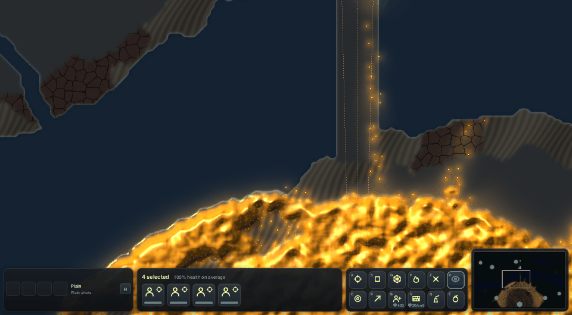
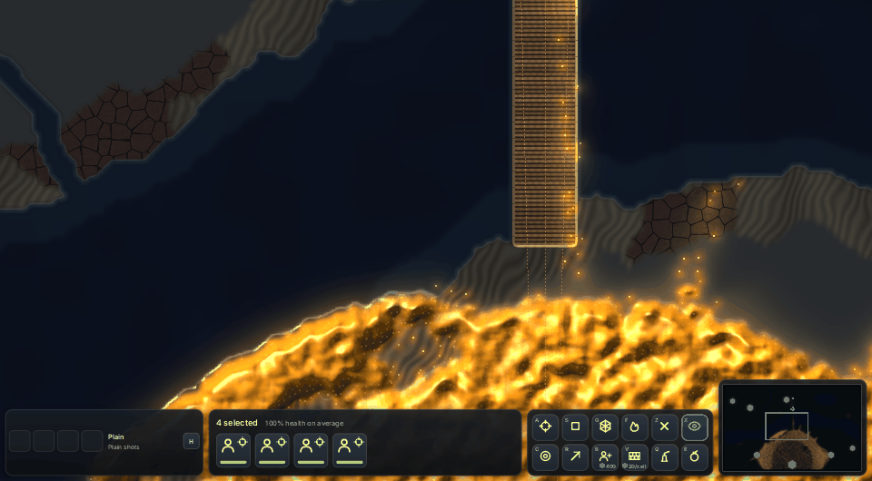
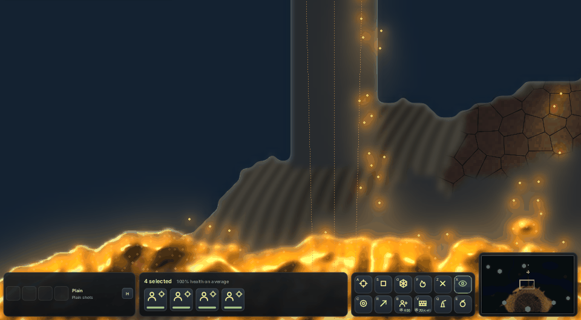
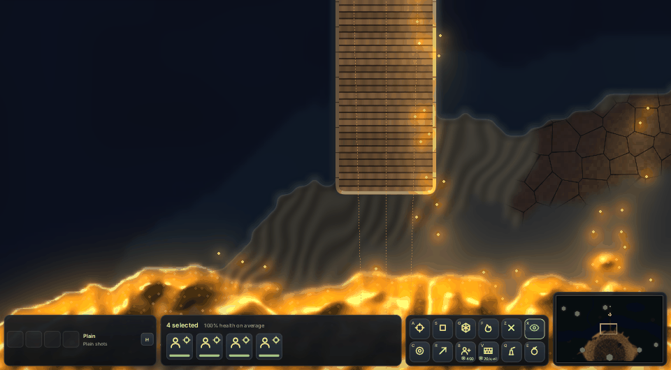
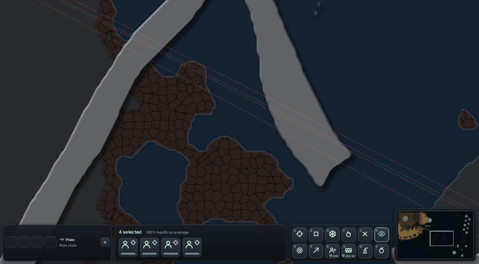
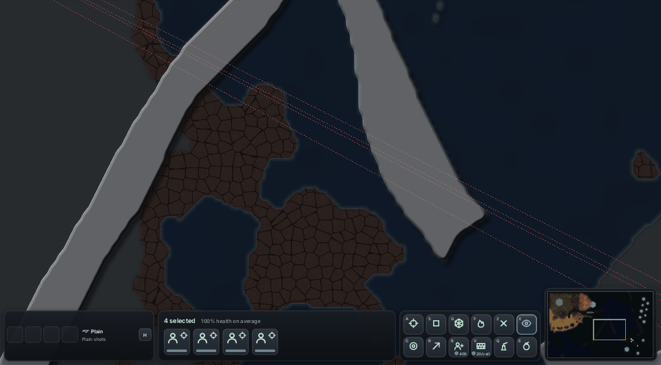
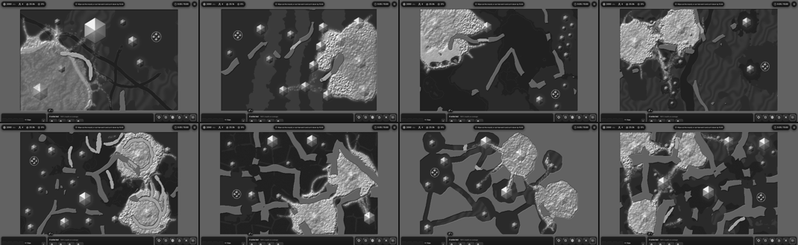
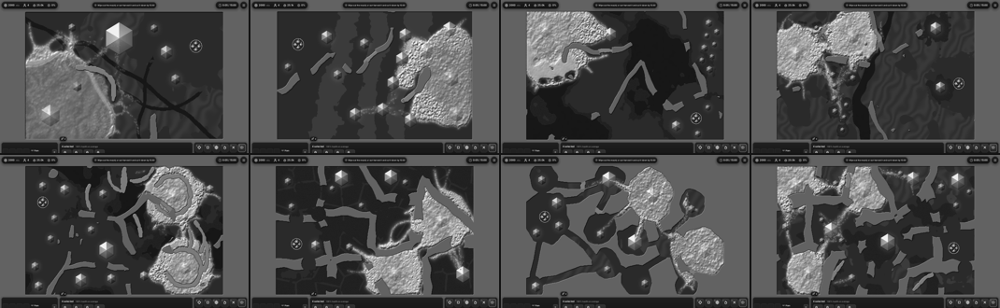

Deep water now deepens toward its middle. A shallow margin shows the bed at its edge, and a thin waterline and damp bank run along the shore. A bridge is a plank deck, with rails and posts, a lit edge and a shadow on the water. All water is a clear step darker than the ground, so lakes and rivers read as hollows even in a grey thumbnail. Soft rock is down to a warm mid-grey, under the slime. Everything is drawn from each cell's ground kind, with no painted line.
Before is the ground kinds thread's own build of the new River map. After is the same build with this change. The map's shape (channel, margin, banks, fords, pond, creek) is theirs.






Grey thumbnails, 266 x 164. Top row: Meadow, Barrens, Fen, Valley. Bottom row: Jungle, Highlands, Caves, Core.


On llvmpipe (River, bench 8 s, idle hand, 1280 x 800, GPU tail p50), it goes from about 82 ms to about 94.5 ms, roughly +12.5 ms. The first cut was +20 ms; the depth rings now use fixed offsets and fewer points, and the shore work is skipped inside the water. Turning soil detail off altogether puts this map at 78 ms, so the ground's texture is about 16 ms of the frame here. It hasn't been timed on the GTX 1070 yet.
Tried and dropped: glitter streaks (they read as rain), noise flecks (they read as angular chips), and a raised deck height (it faded the wood to grey).